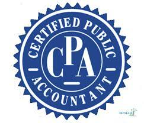
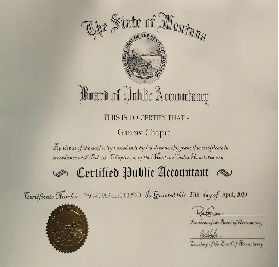

Welcome to the world of numbers and financial insights! Meet Mr. Teoh Li Hong, our dedicated accounting guru at Super-Duper tuition Center. With a passion for demystifying the complexities of accounting, Mr. Teoh is your guide to unlocking the secrets behind balance sheets, income statements, and more.
Whether you're a budding accountant or just curious about the financial world, Mr. Teoh is here to make accounting accessible and exciting. Join Mr Teoh's class and embark on a journey to master the language of numbers!

Educational Background
Mr. Teoh holds a Bachelor's degree in Accounting from TAR UMT, where he graduated with honors. He went on to earn a Master's degree in Finance from Sunway University, solidifying their expertise in the financial realm. Mr. Teoh is also a Certified Public Accountant (CPA) with a proven track record of excellence.

Teaching Experience
Bringing 10 years of teaching experience to the classroom, Mr. Teoh has successfully guided students in mastering the nuances of accounting. Their wealth of practical knowledge gained from working in the accounting industry enriches their teaching with real-world insights that bridge the gap between theory and practice.
Student Success Stories
"Thanks to Mr. Teoh's patient guidance, I not only aced my accounting exams but also gained a deep appreciation for the subject. Their ability to break down complex concepts into digestible bits made all the difference."
- [Sia Yi Yi]
"I struggled with understanding financial statements until I joined Mr. Teoh's class. Their unique teaching approach helped me connect the dots, and now I feel confident tackling any accounting challenge."
- [Lim Yun Khai]
Interactive Learning
At the heart of Mr. Teoh's teaching philosophy is interactive learning. They believe that accounting is best understood when students actively participate in discussions, solve problems collaboratively, and engage in hands-on exercises. Mr. Teoh uses case studies, simulations, and group activities to create an immersive learning experience that resonates with students.
Supportive Environment
Creating a supportive and encouraging classroom environment is paramount to Mr. Teoh. They foster an atmosphere where questions are welcomed, mistakes are seen as stepping stones to learning, and each student's progress is celebrated. Mr. Teoh goes above and beyond to ensure that students feel comfortable asking for clarification and seeking guidance.
Programme Outline
Form 4
Bab 1 : Pengenalan kepada Perakaunan
Bab 2 : Klafikasi akaun dan Persamaan Perakaunan
Bab 3 : Document Perniagaan sebagai Sumber Maklumat
Bab 4 : Buku Catatan Pertama
Bab 5 : Lejar
Bab 6 : Imbangan Duga
Bab 7 : Penyata Kewangan Milikan Tunggal tanpa pelerasan
Bab 8 : Pelarasan pada Tarikh Imbangan dan Penyediaan Penyata Kewangan Milikan Tunggal
Bab 9 : Pembetulan Kesilapan
Form 5
Bab 1 : Analisis dan Tafsiran Penyata Keweangan untuk membuat kekputusan
Bab 2 : Rekod Tak Lengkap
Bab 3 : Perakaunan untuk Kawalan Dalaman
Bab 4 : Perakaunan untuk Perkongsian
Bab 5 : Perakaunan untuk Syarikat Berhad menurut Syer